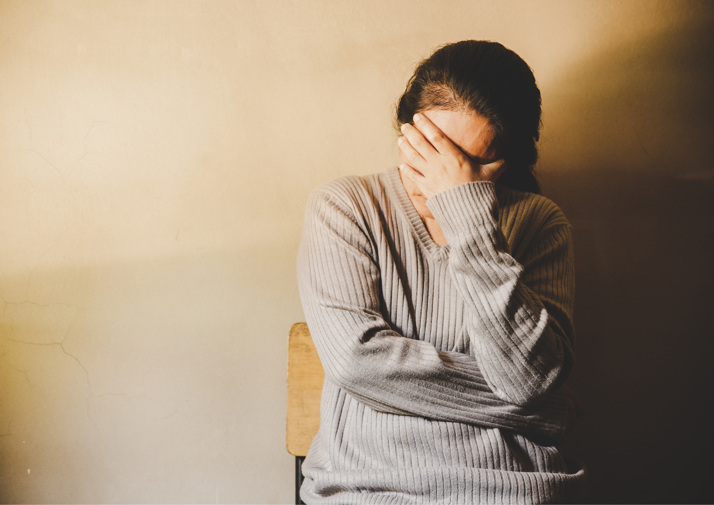
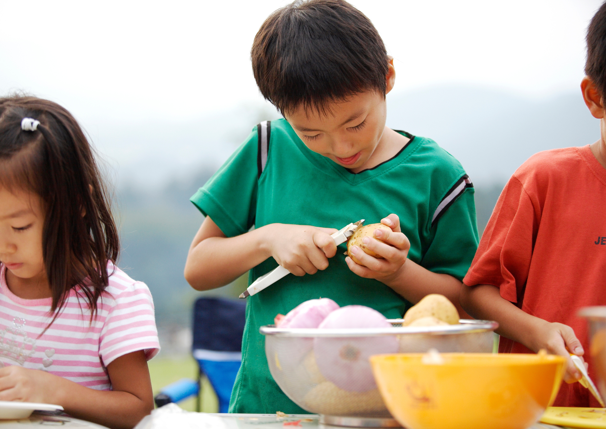
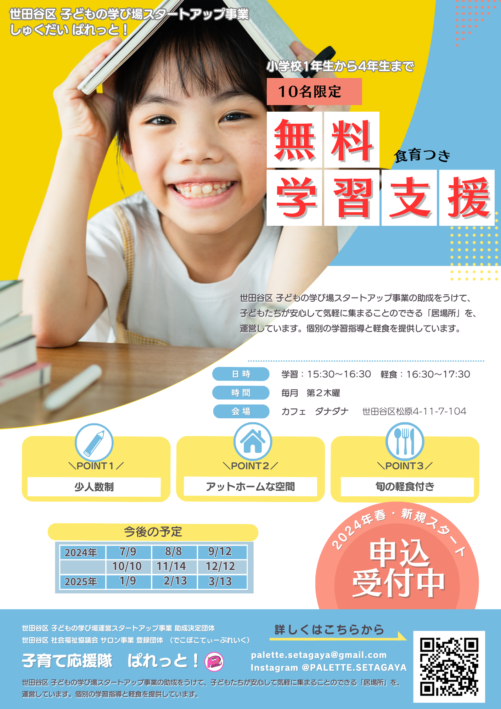
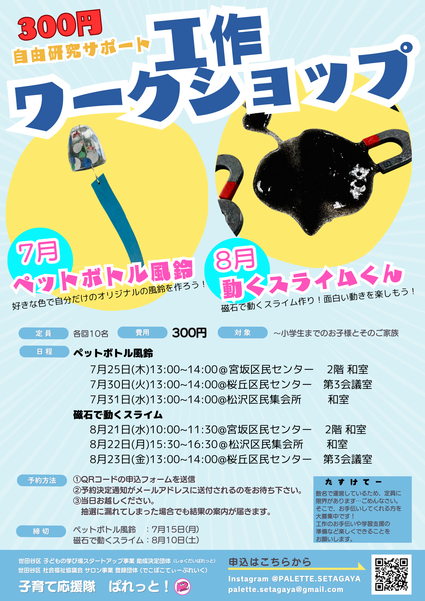
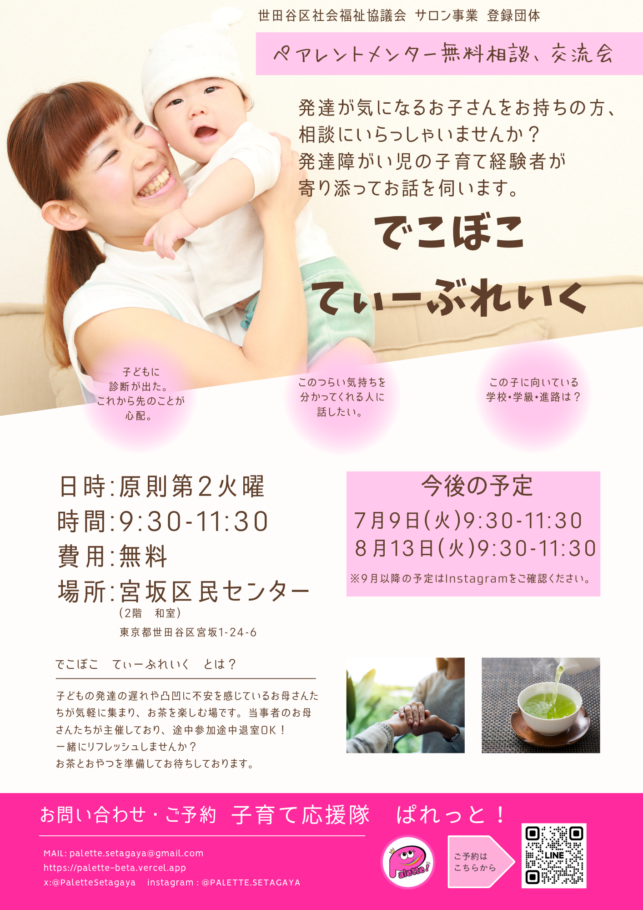

わくわく広がる∞
無限の可能性
ようこそ、子育て応援隊ぱれっと!へ。
世田谷区の助成を受けて
子どもも大人も笑って過ごせる「居場所」を
作っています。
皆様のお越しをこころよりお待ちしております。
参加してみる 【ユニクロ UT】で
支援する
子育て応援隊ぱれっと! とは？
「子育て応援隊ぱれっと!」は、
世田谷区 や 社会福祉協議会の助成を受けて
無料学習支援や工作ワークショップやイベントを提供しています。
誰もが学べる機会と居場所づくりに向けて
普通のお母さんたちが走り続けています。
子育ての社会問題
お金のことや、保活、ワンオペなど問題がさまざま。 そして、電車やバスでベビーカーが使いにくい、赤ちゃんが泣くと冷たい目で見られる…など、日本の子育てってなんだかおかしくない？と思う人も多いですよね。 そんな問題を抱えながらお母さんは毎日の家事やお仕事を抱えて息をつく暇さえない。
情報不足
SNSが発達しているから情報が錯綜し子育てに関する正しい情報が得られにくく、親たちは不安や孤立感を感じることが多いです。
経済的負担
教育費や育児費用の増加により、家庭の経済的な負担が大きくなっています。
孤立感とストレス
核家族化が進み、親たちが育児の孤立感やストレスを感じやすくなっています。
解決へ向けて
情報不足の解決

子育てママ同士の経験談を踏まえて情報を交換し合い、サポートし合う場を作り、子育てに関する情報を得ることができ、安心して育児に取り組むことができます。
経済的負担の軽減
教育費はどの家庭にとっても大きな負担。日本は特に諸外国に比べて教育費が高いです。無料での学習支援や低コストの工作活動を提供しています。これにより、経済的な負担を軽減し、子供たちの成長をサポートします。
孤独感の解消

「ぱれっと！での活動」を通じて、孤独感を和らげる機会を提供しています。共に活動することで、親や子供たちがコミュニティに繋がり、心強いサポートを得ることができます。
「子育て応援隊ぱれっと！」になるまで
社会全体が子育てに優しくなるように
子どもを通じて知り合った数人の母親たちは、子育てに関する悩みや喜びを共有する中で、 発達障害や不登校の子どもたちがたくさんいる現実に直面しました。 そのような状況に深く共感し、自分たちだけではなく自分の周り、地域の子育てがよりワクワクするようなものになるよう、支援がますます重要であることを実感しました。 そこで、保育士資格やピアカウンセラーの資格、食品衛生管理者と学び取得をし、より多くの子どもたちや家族に支えを提供するために「子育て応援隊ぱれっと！」を設立するために立ち上がりました。 私たちは情熱と専門知識を活かし、地域の子育てコミュニティをより強く、包括的に支えるために活動を始めました。
みんなが支え合える拠り所になりたい
お家、学校、ぱれっと第3の居場所
学校での学習や先生との関係がうまくいかない時、 家庭でのお母さんと言い争いになって気まずい時、逃げ場や頼りになる場所として。 昔はおじいちゃんやおばあちゃん、近所の人が頼りになる存在でしたが、 現代では地域の結びつきが薄れ、隣人との繋がりも希薄になってしまいました。 子どもたち、子育て中の親たちも頼れる場所が少なくなっています。 我々ぱれっと!は 誰でも歓迎し、寄り添い、みんなが支え合える拠り所となりたいと考えています。 お母さんが笑っていたら、子どももは幸せ。だからこそ、お母さんの悩みを晴れやかにして癒したい。 そんな場所を目指しています。
子育て応援隊ぱれっと！の活動
「子育て応援隊ぱれっと！」では、様々な活動を行っています。 学習サポートでは学校の宿題に加え授業でわからなかったことを気軽に質問できます。 お茶会では、発達障害や不登校の子を持つ保護者の悩みに保育士やカウンセラーが参加者の対応し、交流を深めます。 ワークショップでは工作などのものづくりイベントを企画し、マルシェでは親子で参加ができ家族の絆を育みます。 私たちは毎日を有意義に過ごせるよう、様々な活動を提供しています。
食育つき無料学習支援
子どもたちに健康な食生活を提供しながら、無料の学習支援を行っています。食育を通じて、食の大切さを学びます。
しゅくだい ぱれっと
| 開催日 | 第二木曜日 15時30〜17時30 |
|---|---|
| 会場 | カフェダナダナ 東京都世田谷区松原4-11-7-104 |
| 詳細 | 詳細はこちらから |
| チラシ |  |
お祭り・マルシェ・工作ワークショップ
地域のお祭りやマルシェを企画・運営しています。家族みんなで楽しめるイベントが盛りだくさんです。
ワークショップ・マルシェ
| 開催日 | 不定期 |
|---|---|
| 会場 | ＜ワークショップ＞経堂近辺の区民会館 詳細は都度確認ください ＜おまつり・マルシェ＞都内 |
| 内容 | ＜ワークショップ＞子どもが楽しめる工作をします。 ＜マルシェ＞お店作りや販売を楽しもう！ |
| チラシ |  |
お母さんたちの茶話会
お母さんたちがリラックスできる場を提供しています。育児の悩みを共有したり、情報交換を行ったりすることができます。
でこぼこ てぃーぶれいく
| 開催日 | 第二火曜日 9時30〜11時30 |
|---|---|
| 会場 | 宮坂区民センター 東京都世田谷区宮坂1-24-6 |
| 内容 | お母さん,お父さんも交流・繋がりを深める癒しの場所。 親子の絆を育みながら、楽しく学びを共有しましょう。 |
| チラシ |  |
JOIN US A NEW MEMBER
子育て応援隊ぱれっと!は、普通のお母さんたちが子育てを楽しく、楽にするため、みんなで協力して子育てしよう！という団体です。
おまつり、ワークショップなど楽しい企画が盛りだくさん！
ぱれっと!を実際に体験してみましょう。 皆様のお越しを心よりお待ちしております。
まずはお友達登録から